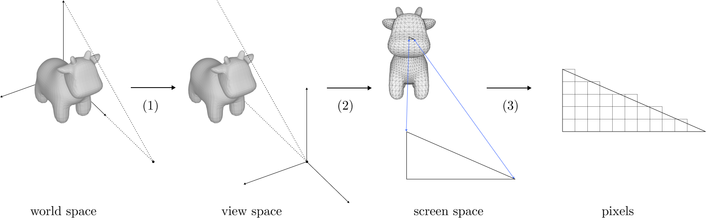

Adventures with Differentiable Mesh Rendering
Some ways we can get gradients when rendering meshes and what we can do with them.
I recently dove into differentiable rendering. This is an interesting technology which allows you to render
a scene, then obtain derivatives of the output pixel values with respect to your continuous inputs:
rendering primitives, camera intrinsics, lighting, texture values, etc. It has applications in 3D deep learning
and inverse rendering, including specific tasks like pose estimation, automatic texturing, or reconstructing scene
geometry or camera parameters given an image
This article will focus on differentiable mesh rendering, specifically mesh rasterization. Meshes haven't been as
popular as neural radiance fields
However, meshes are still more or less needed to make a practical 3D application at scale today. This is because so much of the modern graphics pipeline - hardware and software - is optimized around rasterization of triangle meshes. Lighting and animation of meshes is also more developed than with other primitives, and artists are more used to working with them.
So there is lots of interest in mesh reconstruction and deep learning with meshes. Differentiable mesh rendering could
more directly attack these tasks
What do we need to make rasterization differentiable?
Consider a single pixel in a rasterized image. We'd like to obtain a derivative of the pixel color with respect to all the rendering inputs, like mesh vertex positions, texture attributes, camera parameters, and lights.
Fundamentally, rasterization is almost entirely a series of straightforward, differentiable operations on floating-point inputs: we multiply vertex positions by a series of matrices and perform some divisions to project triangle vertices from 3D to 2D, then when considering a single triangle's contribution to a pixel, we do more matrix multiplications and divisions (and maybe some dot products if lighting is involved) to get the final color of the pixel.
The key non-differentiable operation is the sampling operation: the part where we have to choose which triangle contributes to a given pixel (or decide that the pixel isn't covered by any triangle).
In more detail, to rasterize a mesh with vertex positions and texture attributes, camera parameters, and lights, we:
- Transform the vertices from world space to a coordinate frame relative to the camera. This is done via multiplying the vertex positions by a matrix whose entries are determined by the camera parameters.
- Perform perspective projection on the clip space vertices. This transforms 3D points into 2D points by projecting them onto the image plane. Mathematically, this involves dividing every point by the point's depth component.
-
For every pixel, determine whether it is inside a triangle. If so, then determine where the ray from the pixel hits the triangle in 3D, and interpolate the attributes of the triangle vertices accordingly to get its color. If the 3D intersection point of some triangle is closer to the camera than that of any other triangle, it becomes the final color of the pixel.
- Mathematically, this involves multiplying a vector corresponding to the pixel center by a matrix whose entries depend on the triangle's vertex positions, then maybe (if the pixel is inside) dividing by the vertex depths and using the resulting barycentric coordinates to interpolate vertex attributes and possibly computing lighting with dot products.
- This is where the non-differentiable sampling operation takes place. We have to first determine whether a pixel is covered by a triangle at all, and then pick which triangle to use by taking the one closest to the camera (the other triangles are occluded).
A Naive Approach
Source code for my mesh_renderer implementation on GitHub.
First, we can examine a naive approach to rasterization which ignores the sampling discontinuity. That is, assume for any given pixel, the triangle contributing to that pixel does not change.
This is easy to implement with PyTorch (and most modern differentiable programming frameworks), which allows for discontinuous operations like
branching and array indexing to select different real-valued outputs. Since PyTorch constructs a new computation graph for each run of a function, taking
the derivative of the result with
So for our differentiable rasterizer, if we implement it just like a normal rasterizer, treating PyTorch as a fancy linear algebra library - for any given pixel, we'll obtain the derivative of its color with respect to the triangle that happened to be covering it (and any relevant texture attributes, lighting parameters, etc.) in the latest render.
Problems
Image from
The assumption that the triangle covering a pixel does not change for small perturbations in rendering parameters is highly limiting.
First, it means we can't handle color cliffs. We're effectively assuming that vertex attributes smoothly vary between adjacent triangles and are locally planar
- There are some scenarios where this makes sense. For example, consider a finely tessellated rectangle mapped to a UV-domain in [0, 1], textured with a linear gradient from white on the left to black on the right. The gradient of color for a pixel in the center of the rectangle will push the pixel to the right (or conversely translate the rectangle to the left).
- But many textures do not have smoothly varying values. For example, consider the same finely tessellated rectangle with a black-and-white checkerboard texture. A pixel in a white square would not have the correct gradient unless it was in a triangle intersecting both white and black squares.
Second, it means we only obtain gradients for pixels that are covered. If we have a solid color triangle and we want to reduce the rendering loss to an image of the same triangle translated to the side so there is no overlap, our naive rasterizer won't help because it won't provide any gradients with respect to the target pixels.
Finally, we're unable to obtain gradients for occluded elements. So if a red triangle is behind a blue triangle but we'd like to make a pixel red by optimizing the depths of our triangles, we're unable to do so.
Results
That said, this approach does provide workable gradients for some simple tasks. For example, we're able to optimize a cube's rotation via gradient descent to minimize the RGB loss against an image of the same cube with a target rotation:
We can do the same thing for more complex meshes too. For example, given a 2k vertex teapot mesh, we're able to optimize the teapot's roll angle from 0 to 30 degrees using the same method.
But the range that converges is limited. When the target render sets a 45 degree teapot roll, the optimization fails to converge:
A Softer Approach
Source code for my soft_mesh_renderer implementation on GitHub.
A better approach is to formulate rasterization as a “soft” process
Diagram from
Mathematically, the color of a pixel \( \mathbf{I}(\mathbf{p}) \) is given by $$ \mathbf{I}(\mathbf{p}) = w_bC_b + \displaystyle\sum_{i}{w_i(\mathbf{p})C_i(\mathbf{p})} $$
where
- \( C_i(\mathbf{p}) \) is the color contributed by triangle \( i \) to pixel \( \mathbf{p} \).
- The weights \( w_i \) are the probabilities of the triangles and satisfy \( \sum_i{w_i(\mathbf{p})}=1 \).
- \( w_bC_b \) is the background color contribution.
Triangles covering the pixel contribute the same color they would for normal rasterization, while other triangles contribute the color of their point whose projection is nearest to the pixel in screen-space.
Figures from
The probability \( w_i \) is interesting. One can view the sampling operation as a “hard” probability where the closest triangle covering the pixel has a probability of 1 and all others have probability zero. This "winner-take-all" operation has a differentiable generalization used in machine learning: the softmax function! \( w_i \) looks a lot like softmax: $$ \displaystyle w_i(\mathbf{p}) = \frac{D_i(\mathbf{p})\text{exp}(\frac{z_i(\mathbf{p})}{\gamma})}{\text{exp}(\frac{\epsilon}{\gamma}) + \sum_j{D_j(\mathbf{p})\text{exp}(\frac{z_j(\mathbf{p})}{\gamma})}} $$ where
-
\( z_i(\mathbf{p}) \) gives how far the nearest 3D point on the triangle is from the viewing frustum's far plane. It's like depth, except 0 means the point is as far as possible (lies in the far plane) and 1 means the point is as close as possible (lies in the near plane). Notice how if we hold the other terms constant, the probability output is very similar to the z-buffering operation.
- \( \epsilon \) is there to give the background color a little bit of probability.
-
\( D_i(\mathbf{p})=\text{sigmoid}(\text{sgn}_i(\mathbf{p})\frac{d_i(\mathbf{p})^2}{\sigma}) \) is a “soft fragment” value which gives a number (0, 1) depending on the distance of the pixel from the center of the triangle in screen space (higher towards the center).
- It's a sigmoid so it falls off really quickly outside of the triangle (as determined by \( \sigma \)), but is still differentiable everywhere. See the paper for more details on the terms.
- Notice this modulates all the depth exponential terms except for the background color term. The idea is “pick the closest triangle in depth, but only weigh it more than the background color if it's close enough to the pixel in screen space.”
Since all functions above are differentiable, gradients can flow from the output color back to any of the inputs (mesh vertices, attributes, lighting, camera). And since soft rasterization approaches hard rasterization in the limit, the optimum of a loss function incorporating it should be approximately equal to the optimum of the hard rasterizer, too.
The core rasterization procedure looks a bit like this
def rasterize(vertices, triangles, attributes, image_width, image_height):
# vertices: float32 tensor shape (num_vertices, 3) giving vertex positions
# triangles: int32 tensor shape (num_triangles, 3) giving vertex indices of triangles
# attributes: tensor shape (num_vertices, num_attributes) giving vertex attributes
rgba_result = torch.zeros(image_height, image_width, 4)
for y in range(image_height):
for x in range(image_width):
soft_weights = torch.zeros(len(triangles))
soft_colors = torch.zeros(len(triangles))
for i in range(len(triangles)):
triangle = triangles[i]
bc, d = barycentrics_of_and_distance_to_nearest_point(
x, y, triangle, vertices
)
# 1 is near plane, 0 is far plane
z = normalized_depth(bc, triangle, vertices)
c = sample_texture_and_light(bc, triangle, attributes)
soft_colors[i] = c
soft_weights[i] = soft_fragment(d) * torch.exp(z / gamma)
sum_weights = torch.sum(soft_weights)
bg_weight = torch.exp(eps / gamma)
soft_weights = soft_weights / (sum_weights + bg_weight)
rgba_result[y][x] = soft_weights @ soft_colors + bg_color * bg_weight
return rgba_result
Overall, the process is a bit like rendering a blurred version of the normal image, except we're also blurring in the z-component and the formulation is independent of screen size, so we don't need to pick a blur kernel size (although in practice, implementations like PyTorch3D will limit aggregation to triangles within a given blur radius hyper-parameter).
How well does it work?
The soft rasterizer works much better. Cases that the naive rasterizer doesn't provide gradients for are handled robustly by the soft rasterization formulation.
It can handle color cliffs across adjacent triangles because we get gradients from those triangles. So for a tessellated rectangle divided into a black half and white half, the gradient of intensity for a pixel in the black half would push the pixel towards the white half, even if it was in a triangle whose vertices were all black.
Uncovered pixels also get gradients from triangles. So the rasterizer is able to push triangles to previously un-covered areas of the screen via gradient descent. Occluded triangles can also be similarly moved to the front.
For the teapot rotation example earlier, my soft differentiable rasterizer implementation is able to handle the 45-degree roll angle that my naive rasterizer couldn't:
This optimization was performed using lower-resolution renders because I didn't get around to implementing an optimized C++ kernel for my soft rasterizer.
I was also able to fit meshes with my soft rasterizer. Below, I fit a 402-vertex sphere mesh to three 96x96 views of a much higher poly cow mesh by minimizing silhouette loss to the views using gradient descent:
My implementation isn't well calibrated so the result is low-quality. See the PyTorch3D mesh fitting tutorial for an example of a higher-quality fit.
What are the limitations?
Mesh fitting via differentiable rasterization requires specific input. The topology is fixed and must be provided by the user, the camera poses must be known, and the images must be masked so that only the objects of interest contribute loss. This means differentiable mesh rasterization and gradient descent alone probably aren't general enough for most ad-hoc real-world 3D reconstruction use cases.
For example, if you want to build something like an app where you can use your phone to take a few pictures of something on your desk and get a usable 3D mesh out of it, you'd need to use structure from motion techniques and image segmentation to get the poses and masking. Though on the other hand many household objects could be acceptably fit with a spherical mesh.
Additionally, the mesh fitting process needs some manual supervision and requires either a GPU or lots of time to get high-quality outputs.
Fitting meshes with a non-trivial number of vertices required thousands of gradient descent steps for me (though this can be made pretty fast if accelerated via GPGPU -
see implementation notes below), and the optimization process was somewhat sensitive to hyper-parameters like learning rate, blur radius, and soft aggregation sigma/gamma.
Regularization using extra terms like laplacian and edge length loss was also necessary to get good
convergence and avoid failure cases where the mesh would end up discontinuous and “spiky”.
What can we use this for?
The biggest use case is to enable deep learning to be used on tasks that involve going from 2D images to 3D meshes. For instance, a popular research topic is how we might train a model to take in a single 2D image and output a 3D mesh: that is, how we might solve single-image 3D reconstruction with machine learning methods that learn how 2D images correspond to the most common objects in the real world. We can train such a model using 3D supervision (e.g. 3D mesh labels for each 2D image input) using metrics like the Hausdorff distance to allow predictions to have different topologies than labels, but there is only so much 3D data out there. With differentiable mesh rendering, we can train a network using only 2D supervision; given an image, the model can output some mesh, and the differentiable renderer can render it and back-propagate image RGB loss through the mesh vertices.
We can extend this to tasks which involve predicting parameters that influence the appearance of some object in 3D again given only 2D supervision. For example, a “3D morphable model”
is a popular way to parameterize a human face with a set of sliders. Given a set of face images, we can train a model to predict the values of these sliders by back-propagating facial
identity loss through the rendered images.
Implementation notes
Source code for the rasterizers can be found on my GitHub.
Python-only implementations of either of these rasterizer are very slow. Basic optimizations like vectorizing some calculations and culling triangles outside of the soft rasterizer's blur radius threshold by bounding box with quad trees help, but the lack of proper parallelism hurts a lot since the work to do scales very quickly with screen dimensions. Dynamically re-building the computation graph and back-propagating through it is expensive as well. Production implementations instead manually compute the forward and backwards passes, which avoids the overhead of auto-grad but is difficult to read and write. Additionally they tend use either C++ (where better parallelism can be achieved with threads as well as all the other benefits of statically compiled code with more control over memory layout) or CUDA (far better parallelism by actually leveraging the GPU for rasterization, as it's intended to be used).
Performing 1000 optimization steps to fit a 402-vertex mesh to three 96x96 target views took a little less than 5 CPU-hours (7 hours wall-clock time) on my M3 MacBook Pro using my Python-only soft rasterizer implementation. In contrast, PyTorch3D's C++ soft rasterizer was able to fit a 2562-vertex mesh (over 6 times as many vertices) to the same images in even less time: 3 CPU-hours on my laptop. PyTorch3D's own online mesh fitting tutorials which leverage Google Colab machines with CUDA only take a few minutes to do something similar!